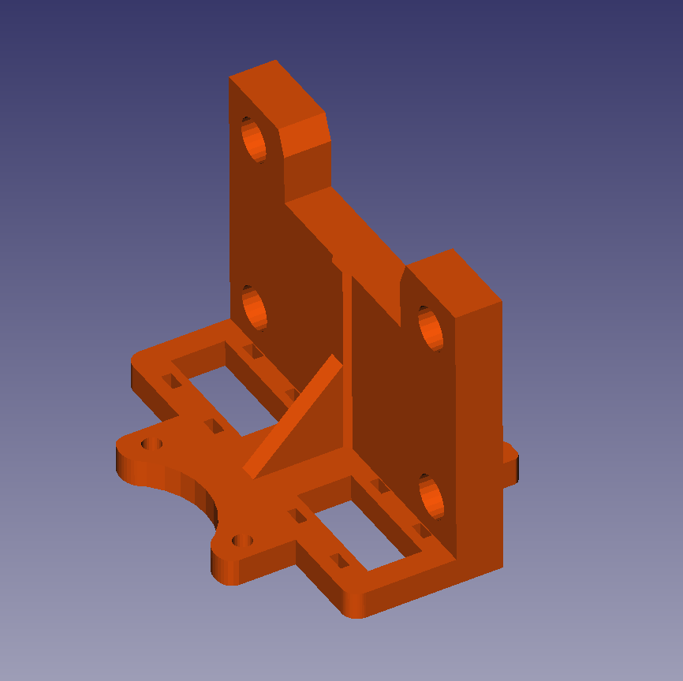
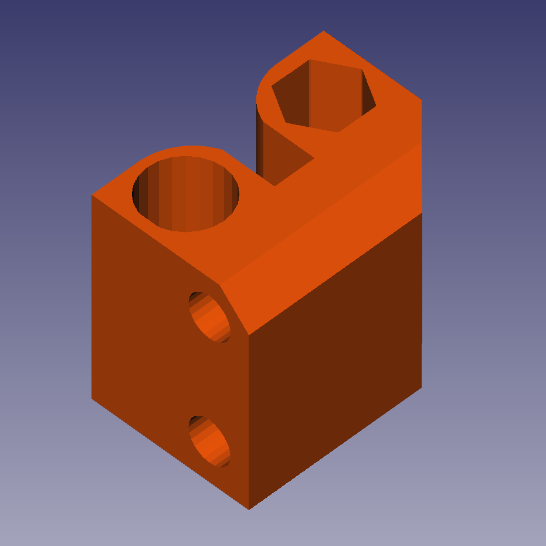
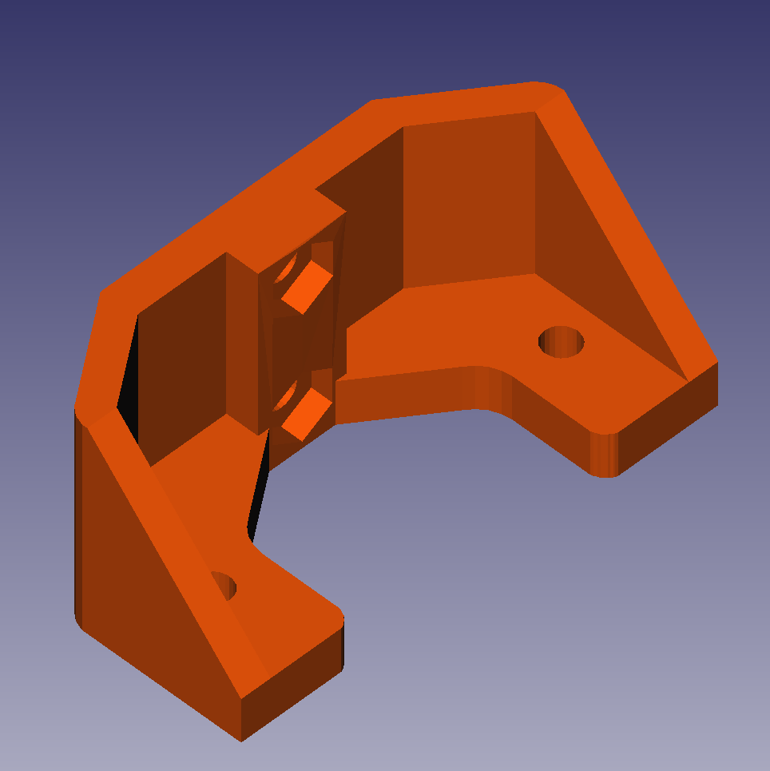
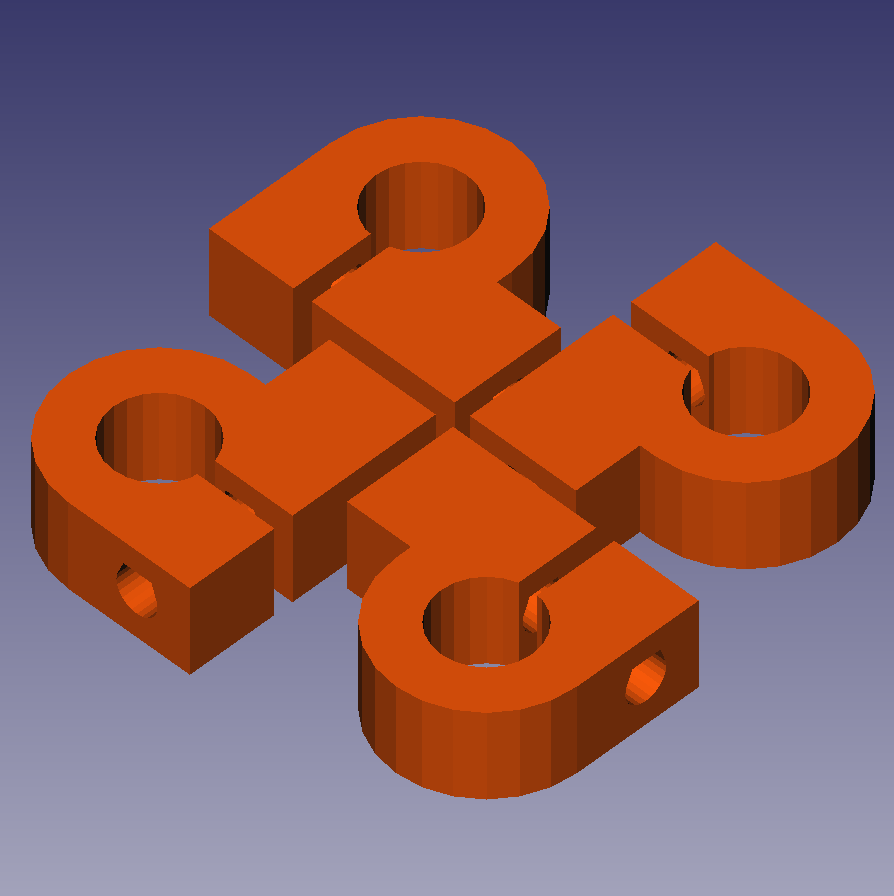
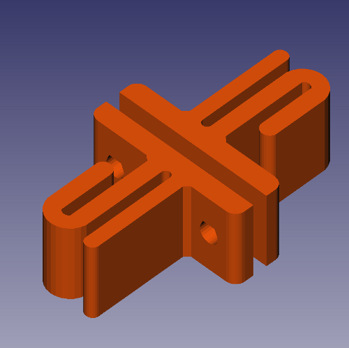
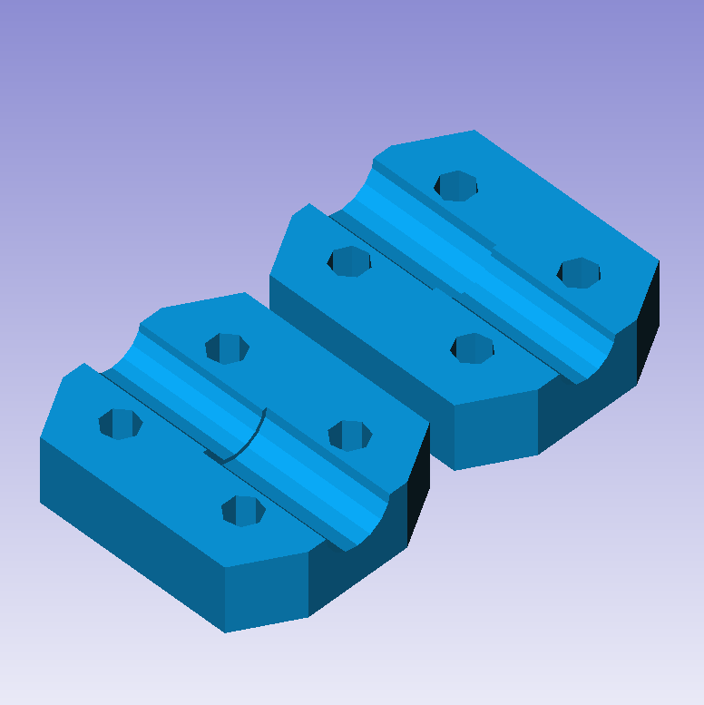
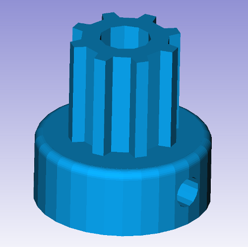
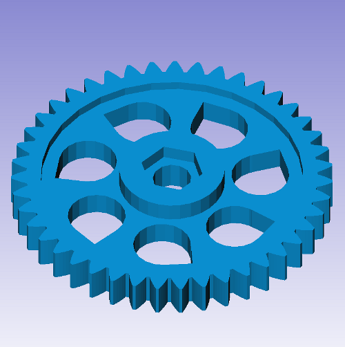

Contenido
[ocultar]Introducción
Piezas imprimibles
Específicas de la Printrbot
| Imagen | Pieza (STL) | Cantidad | Tiempo impresión | Comentarios |
|---|---|---|---|---|
|
 |
01-pb-Basex2.stl | 2 | 1h 33min | Bases de la Printrbot |

|
02-pb-X-Motor-x1.stl | 1 | 1h 38min | Enganche para el motor del eje x |
|
 |
03-pb-X-Idler-x1.stl | 1 | 1h 18 min | Extremo del eje x |

|
04-pb-X-Carriage-x1.stl | 1 | 1h 9min | Carro del eje X |
|
 |
05-pb-Xtruder-Mount-x1.stl | 1 | 42 min | Soporte para el extrusor |
|
 |
06-pb-Y-BarEnd-x4.stl | 4 | 24 min | Extremos para las barras del eje Y |

|
07-pb-Y-Bearing-Guide-x1.stl | 1 | 13 min | Guia para los rodamientos del eje Y |
|
 |
08-pb-BeltClip-x2.stl | 2 | 21 min | Pinza de correa |


Otras piezas necesarias de la Prusa 2
| Imagen | Pieza (STL) | Cantidad | Tiempo impresión | Comentarios |
|---|---|---|---|---|
|
 |
coupling.stl | 2 | 24 min | Acoplamiento |
|
 |
pulley | 2 | 14 min | Polea para los motores x,y |


Extrusor
| Imagen | Pieza (STL) | Cantidad | Tiempo impresión | Comentarios |
|---|---|---|---|---|

|
wade_body-x1.stl | 1 | 1h y 30 min | Pieza principal del extrusor |

|
wade idler | 1 | 23 min | Pieza lateral atornillada al cuerpo del extrusor |
|
 |
wade-big.stl | 1 | 37 min | Engranaje grande |

|
wade-small.stl | 1 | 14 min | Engranaje pequeño |

Fotos
| Álbum de fotos en google+ |
|---|
- Juego de piezas de referencia:
 Las piezas de una Printrbot, impresas por R2 (Click para ampliar) |
Repositorio
Noticias
- 18/Feb/2012: Añadida una foto del juego completo de piezas de la printrbot (impresas por R2 para el clon 21-B de Javier del Alamo
- 16/Feb/2012: Añadidas todas las piezas
- 07/Feb/2012: Comenzada esta página
Enlaces
- Foros de printrbot
- wiki de printrbot, creado por la comunidad
- Printrbot, página oficial
- PrintrBot, en la wiki de Reprap
- Printrbot en thingiverse
- Fotos del montaje
|
|
Proyecto Clone Wars |
| Grupo de Impresoras 3D de la asociación de robótica de la UC3M |